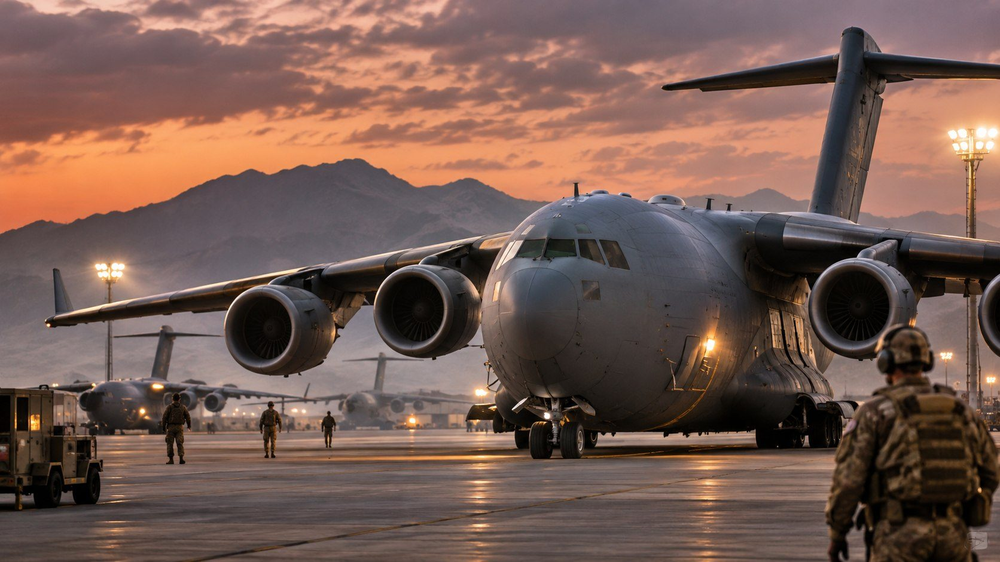

TEXAS NEWS STUDIO / WORLD & DEFENSE
DEVELOPING REPORT · NOVEMBER 7, 2026
U.S. Military Airlift Activity Draws Attention Amid Iran Tensions
Reports of American C-17 cargo aircraft moving toward Middle Eastern bases have prompted renewed attention to U.S. military logistics. Exact routes and destinations in a circulating claim remain unconfirmed.

TNS AI-generated editorial illustration. Not an actual photograph of the reported flights.
TEXAS NEWS STUDIO — Reports of American military transport aircraft operating toward the Middle East are attracting attention amid heightened tensions involving Iran. One circulating account alleges multiple C-17A flights from Fort Bragg arrived at bases in the United Arab Emirates, Saudi Arabia and Djibouti in recent hours. Texas News Studio has not independently verified that specific itinerary, the number of flights, or the timing of those reported arrivals.
Why the C-17 matters
The C-17 Globemaster III is a U.S. Air Force strategic airlifter designed to transport personnel, vehicles and supplies. Military airlift flights can support routine logistics, rotations, humanitarian missions or contingency preparations. Their presence alone does not establish that an offensive operation is imminent.
What remains unconfirmed
Public flight-tracking observations can be incomplete, particularly when military aircraft do not transmit publicly visible position data for an entire journey. Claims about specific departure and arrival bases require corroboration from reliable tracking records, official statements or independent reporting. TNS is not treating the reported Fort Bragg–UAE–Saudi Arabia–Djibouti routing as established fact.
Tex's Take | TNS Commentary
When the big military cargo planes start getting attention, it's worth watching. These aircraft are part of the logistical backbone that keeps operations moving. But a busy flight line isn't a declaration of war. We'll follow credible reports, watch for official confirmation, and keep the difference between observation and speculation clear.
Sources and verification
For authoritative information on the aircraft and official military developments, consult the U.S. Air Force C-17 fact sheet and U.S. Central Command releases. These sources explain the aircraft and provide official updates; they do not independently confirm the circulating flight itinerary.
Editorial status: developing report. TNS has not independently verified the claimed flights or obtained official confirmation of their purpose.